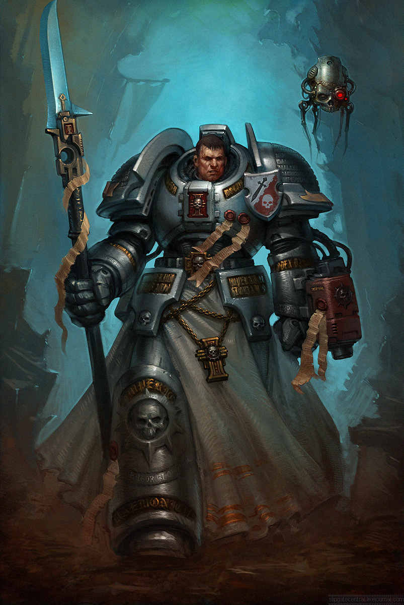

О временах задолго до основания Империума, когда человечество впервые колонизировало другие миры, известно немногое. Это время сегодня известно просто как Эра Тёмных Технологий. Даже среди высших эшелонов Адептус Терра и внутри монастырей-крепостей Адептус Астартес хранятся лишь немногие достоверные знания о временах, скрытых завесой суеверий и дремучих страхов. Сохранившиеся кошмарные знания и тёмные материи – это реликты забытых веков, столь горестных, что они закрыты от использования и ознакомления даже для их собственных сторожей. Жречество Марса прекрасно знает: как
силы Хаоса нашёптывают из потусторонней пустоты, так и у грехов прошлого есть свои голоса, и могущество, которое они обещают, не менее опасно
В те древние времена человечество достигло пика научного и технического развития. Добившись этого, человек шёл по галактике как завоеватель и исследователь, покорив территорию невообразимых размеров, шагая меж звёзд словно бог, повергающий бесконечно древние империи чужих и переделывающий бесчисленные планеты в миры, пригодные для обитания.
Расцвет могущества длился недолго, и почти за одну ночь империя размером с галактику была повергнута в анархию, варварство и ужас. Варп-штормы поглотили колыбель человечества и Царство человека рухнуло. Долгие тысячелетия, пришедшие после, стали известны как Эпоха Раздора, и на эти долгие годы миры человека, закрытые пеленой ужаса и тьмы, оставались добычей демонов и чужаков, пока не пришёл Император-Спаситель.